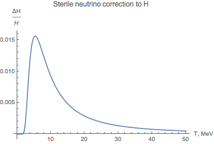

Sterile neutrinos streaming and decay
After sterile neutrinos had decoupled from the plasma, their distribution as a function of conformal momentum stays constant. During this time sterile neutrinos do not scatter with the equilibrated plasma but they do decay.
Main decays channels for sterile neutrinos with masses $m_N < m_K$ range are:
\begin{align} N &\to \nu_\alpha + \nu_\beta + \overline{\nu_\beta} \\ N &\to \nu_\alpha + l^+_\beta + l^-_\beta \\ N &\to \nu_\alpha + l^+_\alpha + l^-_{\beta \neq \alpha} \\ N &\to \pi^0 + \nu_\alpha \\ N &\to \pi^+ + l^-_\alpha \end{align}
Summed up decay rates of these processes gives us the total decay rate of the sterile neutrino. As the interaction rates of weak and electromagnetic processes are still sufficiently higher than the expansion rate of the Universe, all decay products of the sterile neutrino immediately equilibrate and affect only the temperature of the plasma.
Then the kinetic equation on the sterile neutrino reads:
\begin{align} \frac{d f_N}{d t} &= - (3 H + \tilde{\Gamma}_N(p)) f_N \\ \tilde{\Gamma}_N(p) &= \frac{\Gamma_N}\gamma = \sqrt{1-v^2} \Gamma_N = \sqrt{1-\left(\frac{p}{E}\right)^2} \Gamma_N = \frac{m}{E} \Gamma_N \end{align}
The decay width is modified by the $\gamma$-factor of the particle, which can significantly prolong the lifetime of relativistic species. In the non-relativistic regime this allows to write a simplified Boltzmann equation on the density:
$$ \frac{d n_N}{d t} = - (3 H + \Gamma_N) n_N $$
However, for relativistic regime it looks like:
$$ \frac{d n_N}{d t} = - \left(3 H + \Gamma_N \frac{\left< \frac{m}{E} \right>}{n_N}\right) n_N $$
where angular brackets denote the averaging over the distribution function of the specie.
The value of the ratio $\frac{\left< \frac{m}{E} \right>}{n_N}$ defines, how much the decay law differs from the exponential radioactive decay law $e^{-\Gamma t}$. More energetic particles survive longer and the distribution function gains non-equilibrium high-energetic corrections.
Decay products function as a heating system of the plasma. This effect can be seen from the energy conservation law. For simplicity, let's consider a system consisting only of photons and non-relativistic sterile neutrinos:
\begin{align} &\dot{\rho} + 3 H ( \rho + p ) = 0 \\ \rho_\gamma &= \frac{2 \pi^2}{30} T^4 & p_\gamma &= \frac13 \rho_\gamma & \dot{\rho_\gamma} &= 4 \rho_\gamma \frac{\dot{T}}{T} \\ \rho_N &= m n_N & p_N &= 0 \end{align}
\begin{align} \dot{\rho} + 3 H (\rho + p) = \dot{\rho_\gamma} + \dot{\rho_N} + 3 H (\frac43 \rho_\gamma + m n_N) = 0 \end{align}
\begin{align} 4 \rho_\gamma \frac{\dot{T}}{T} - (3 H + \Gamma_N) m n_N + 3 H (\frac43 \rho_\gamma + m n_N) &= 0 \\ 4 \rho_\gamma \frac{\dot{T}}{T} - \Gamma_N m n_N + 4 H \rho_\gamma &= 0 \end{align}
\begin{equation} \frac{\dot{T}}{T} = \frac14 \Gamma_N \frac{\rho_N}{\rho_\gamma } - H \end{equation}
This effect can be accounted for analytically without considering the precise dynamics of the decay products. From the equation follows that the amount of heating highly depends on the energy density ratio of the sterile neutrinos and photons, so non-relativistic particles won't affect the expansion rate significantly.
Depending on the decoupling temperature, one might also have to account for a transition in the plasma similar to the electron-positron annihilation at temperature $\sim m_e$ that changes the number of relativistic degrees of freedom - hence, the entropy conservation of the Universe will require another boost of temperature. Transition in this case is the QCD transition.
Plasma heating by decaying non-relativistic sterile neutrinos
$$ \frac{\rho_N}{\rho_\gamma} \sim \frac{m n_N}{\rho_\gamma} = \frac{m \left( \frac{m T}{2 \pi} \right)^\frac32 }{\frac{2\pi^2}{30} T^4} e^{-\frac{m}{T}} e^{-\Gamma_N t} $$
The decrease in the sterile neutrinos density due to decays depends only on the time it took the Universe to cool down to the temperature $T$:
$$ t = \frac{M_{pl}^*}{2 T^2} $$
So, the final temperature correction is determined by the equation:
$$ \frac{\dot{T}}{T} = \frac{1}{200} \Gamma_N \left(\frac{m}{T}\right)^\frac52 e^{-\frac{m}{T} -\frac{\Gamma_N M_{pl}^*}{2 T^2}} - H $$
The relative size of the correction due to sterile neutrinos turns out to be insignificant:
